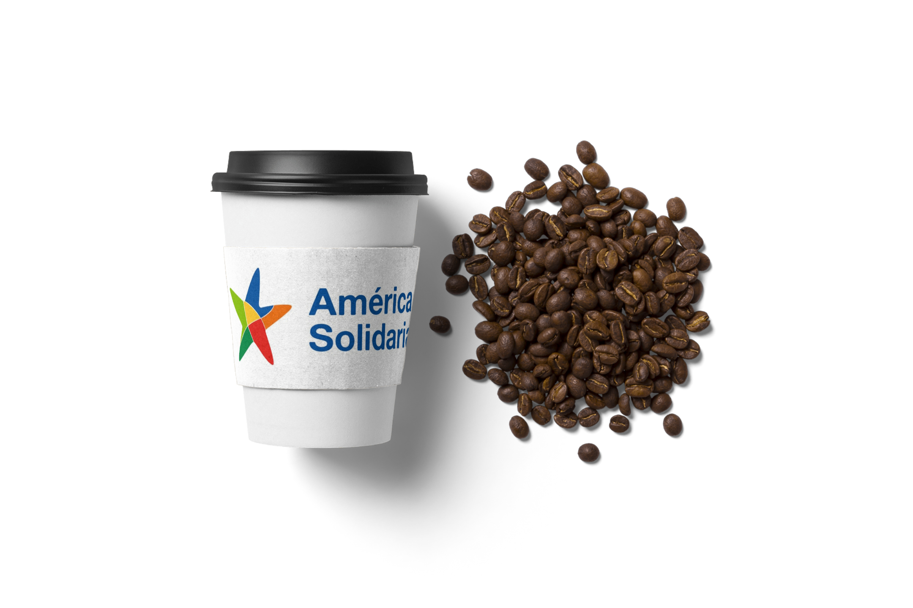
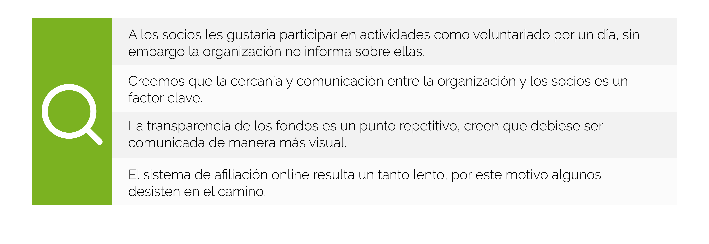
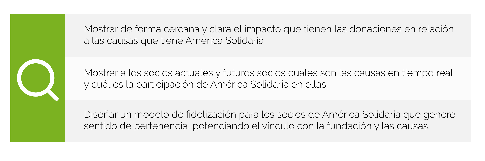
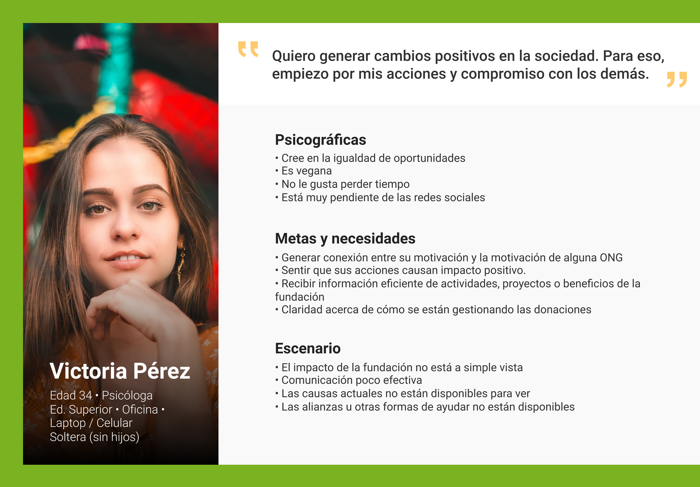
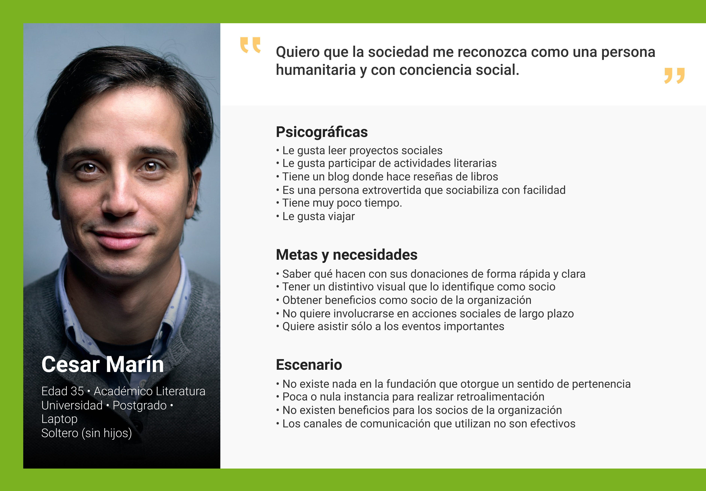
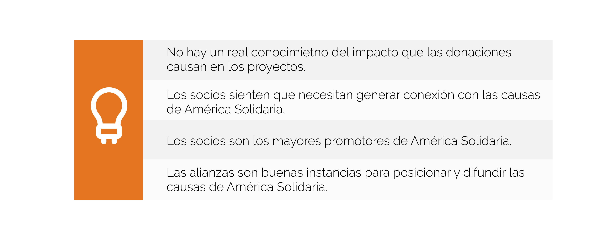
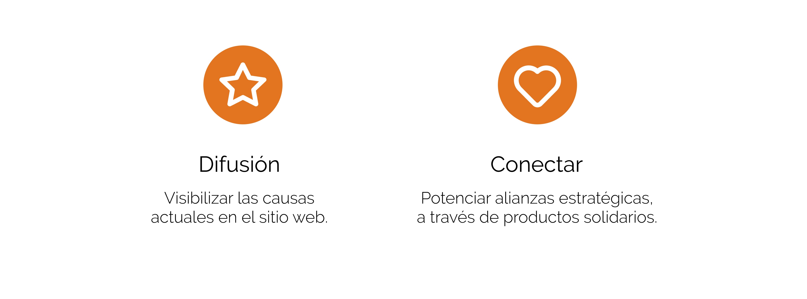
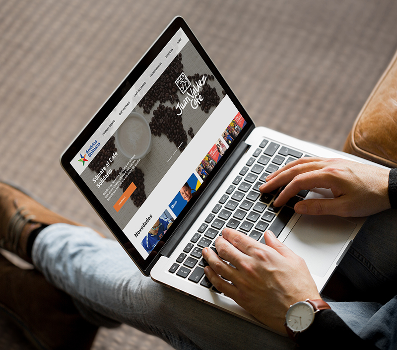

América Solidaria
El desafío de este proyecto consistía en diseñar un modelo de fidelización de socios de América Solidaria que sea vinculante con la causa y con el territorio.
Por lo tanto, es necesario conocer las motivaciones, percepciones y expectativas que tienen los socios de América Solidaria con la fundación y generar una propuesta que sea relevante y diferenciadora.
Rol
- User Research
- Interaction Design
- Visual Design
- Prototyping
Research
Este proyecto se enfocó en el diseño de servicios, por lo tanto el espectro de investigación se intensificó considerablemente.
En primera instancia para conocer a los usuarios decidimos realizar entrevistas a 3 tipos de usuarios que tiene América Solidaria:
1. Socios actuales: quienes llevan años aportando a la organización.
2. Socios fuga: quienes han dejado de participar y nos sirve
mucho saber el por qué de su decisión.
3. Socios potenciales: quienes podría afiliarse y eventualmente sean donadores en otras organizaciones.
De este primer acercamiento obtuvimos los siguientes hallazgos:

Customer Journey Map
Para entender aún más a los usuarios de América Solidaria, decidimos analizar el viaje que tienen que realizar cuando deciden afiliarse.

Mapa de síntesis de hallazgos
Complementado el análisis anterior del viaje, decidimos rastrear en su totalidad todos los componentes del servicio, para detectar más puntos de contacto, por lo que realizamos un Service blueprint donde obtuvimos mas aprendizajes.
Ahora con todos los hallazgos de la etapa de investigación, es necesario realizar un mapa de síntesis para ordenar y priorizar los temas relevantes detectados.

Análisis de problemas
Esta herramienta nos ayuda a convertir en oportunidades de mejora los dolores que fuimos descubriendo, de esta forma sabemos cómo plantear el rediseño del servicio.

Resultado del análisis de problemas detectamos las siguientes oportunidades de mejora:

User persona
Para clarificar a los socios más representativos, realizamos dos personas:
1. Tenemos a Victoria que está muy comprometida
con el cambio social, promoviendo una actitud
positiva e igualitaria.

2. Tenemos a César quien también realiza acciones sociales, sin embargo busca obtener de alguna forma un reconocimiento por lo que hace.

Insights
Con todos los análisis realizados debemos comenzar a definir y es en este proceso donde obtuvimos 4 descubrimientos.

Propuesta
Como toda propuesta consideramos tres factores muy importante: el servicio debe tener un valor para el usuario, debe ser una oportunidad para el mercado y debe ser consciente tecnológicamente.
Por lo tanto, diseñamos un modelo completo de fidelización que apunta a dos grandes conceptos:

Modelo de fidelización
Para generar este vínculo y lograr que el socio sienta pertenencia con América Solidaria, proponemos un café solidario, que se comercializará en el Café Juan Valdez que es parte de Falabella retail, quienes mantienen una alianza con la fundación.
El producto café solidario será clave para el posicionamiento de marca, para la captación de futuros socios y para potenciar el compromiso de los socios con la organización.
Por cada café solidario comprado, el socio estará aportando a las causas de América Solidaria y paralelamente pasará a ser parte de un sistema de gamificación simple, a través de la acumulación de estrellas solidarias que podrá canjear por productos del Café Juan Valdez. De esta forma estamos gestando un compromiso y una satisfacción mutua, dándoles la experiencia de disfrutar y ayudar al mismo tiempo.
Este café solidario es el puntapié a una serie de posibilidades con otras alianzas que tenga América Solidaria; este modelo aplicaría a distintos productos potencialmente comerciables.
Storyboard
Diseñamos la secuencia de acciones del funcionamiento del servicio del café solidario en la realidad. Partiendo con la llegada del socio a la cafetería, para luego pasar a todas las interacciones que tendría con el colaborador del local.

Wireframe
La proyección de los primeras pantallas es fundamental para entender cómo serían las interacciones y entrega de información al socio sobre las causas y sobre la estrategia de fidelización en el sitio web.

Prototipo de alta definición
La propuesta del servicio se complementa con la información que el socio puede encontrar en el sitio web de América Solidaria, por lo tanto es importante mostrar por este canal cómo es la dinámica de esta alianza estratégica que propusimos con la cafetería Juan Valdez.
